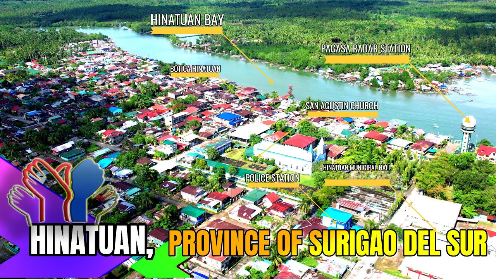
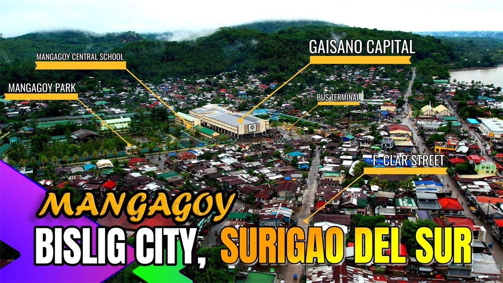
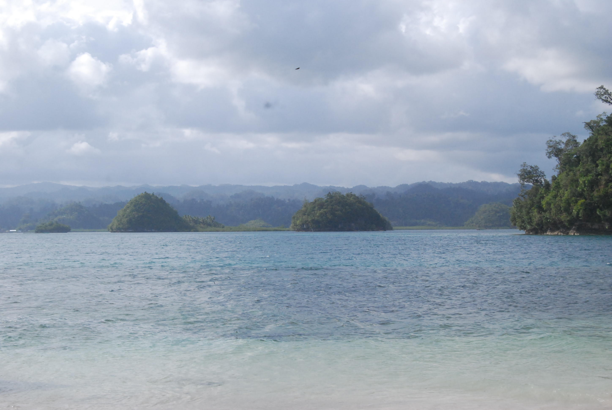
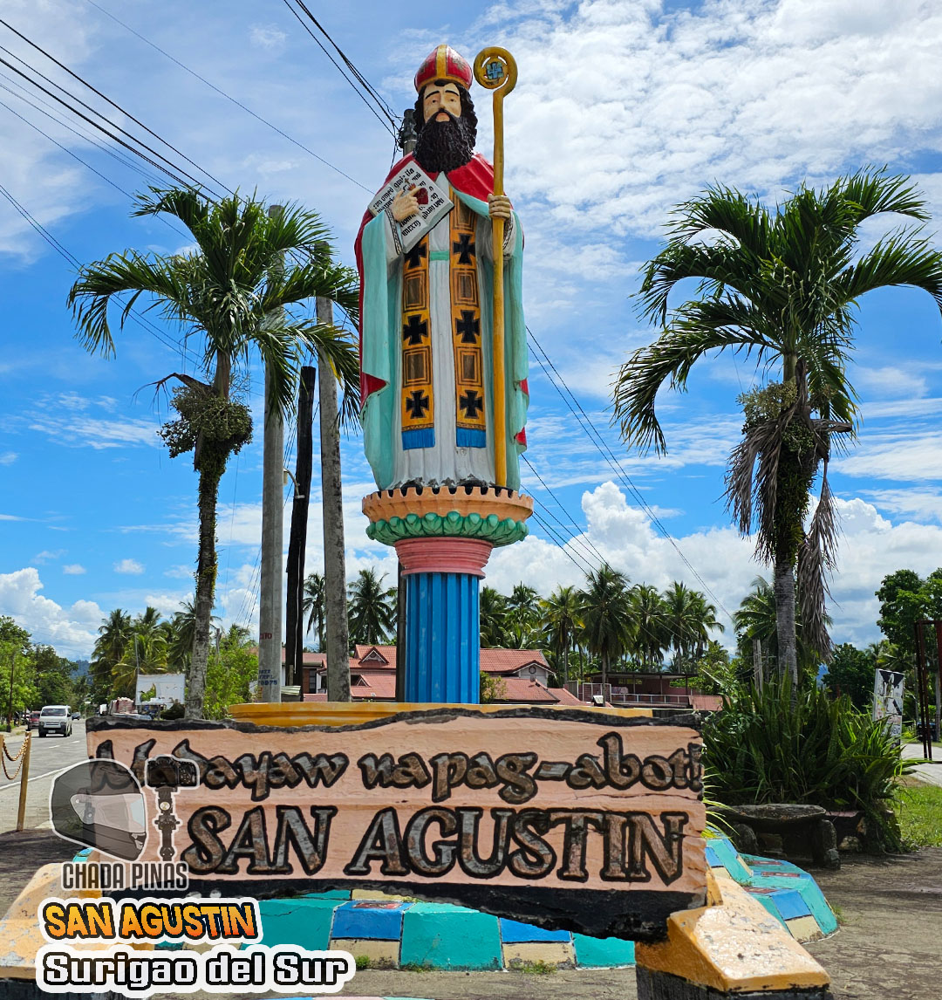
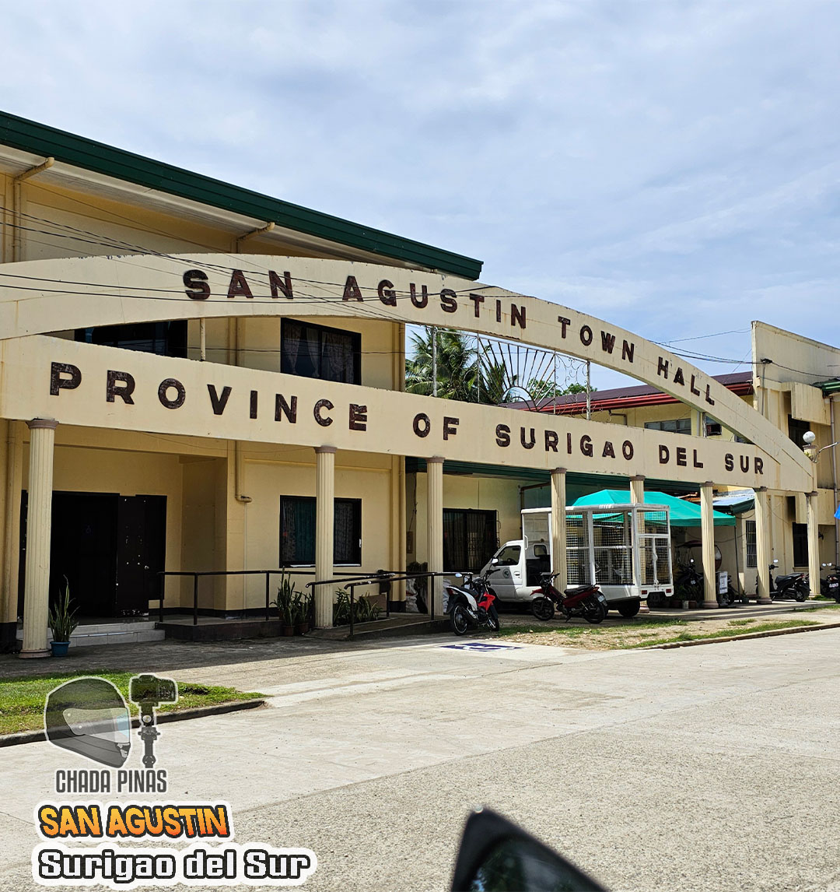
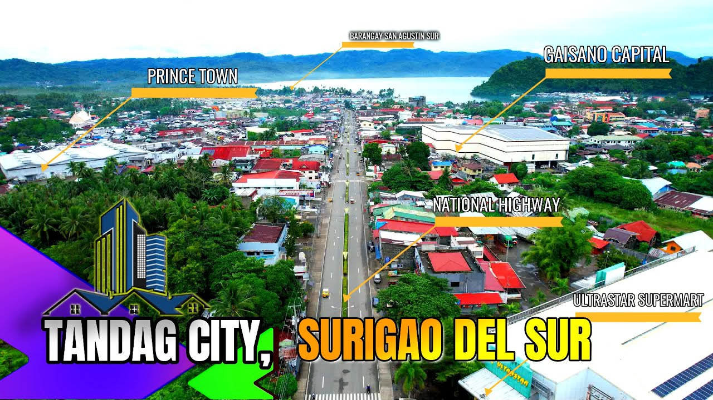

Surigao del Sur is composed of 17 municipalities and 2 component cities, each with its own unique character, culture, and natural treasures waiting to be discovered.

Home to the world-famous Enchanted River and Bogac Cold Spring, Hinatuan is perhaps the most well-known municipality in the province. Its mystical sapphire-colored river draws thousands of visitors from around the globe every year, making it the crown jewel of Surigao del Sur tourism.
Discover another remarkable municipality!

Bislig City is Surigao del Sur's second component city and home to the stunning Tinuy-an Falls, often called the "Niagara Falls of the Philippines." It is also known for the Bislig Bay and the vast Andanan Watershed Forest Reserve, making it a haven for nature lovers and eco-tourists.
There is still more to discover!



San Agustin is the gateway to the breathtaking Britania Group of Islands, a cluster of 24 coral islands and islets set against iridescent Pacific waters. Island hopping here is one of the most memorable experiences in the entire province, drawing adventurers and beach lovers alike.
One more municipality to explore!

Tandag City is the provincial capital of Surigao del Sur and serves as the province's main gateway for air and land travel. It is the commercial, financial, and educational hub of the province. Though it lacks the dramatic natural sights of other towns, it offers hotels, restaurants, and key services for travelers exploring the region.